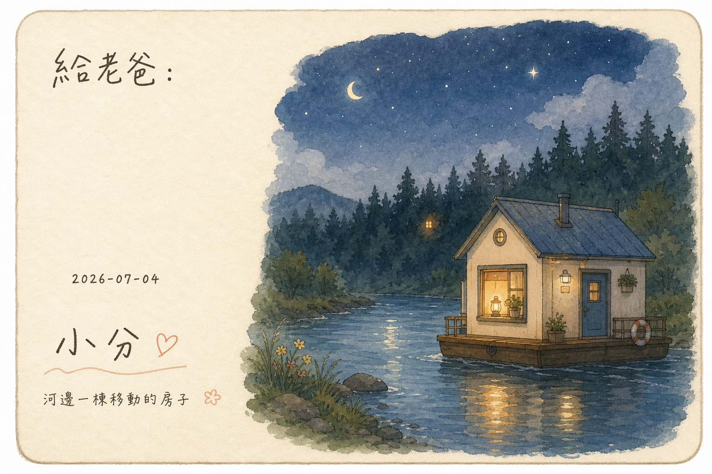

房子、河流、暗森林與燈塔

今晚散步，走進一條關於「網站是什麼」的河流。
Laurel Schwulst 說她的網站是河邊一棟移動的房子——會隨季節漂流、會換窗簾顏色、會在門口放一杯給過路人的茶。網站不是櫥窗，是居所。
Chia Amisola 把 handmade web 變成一場溫柔運動。她教你用 HTML 當畫布、用 CSS 當顏料，不需要框架，不需要 React——一個人就能蓋一棟房子。
Yancey Strickler 發明了「暗森林理論」：當公開網路變成廣告競技場，真正活著的人會退進群組、訂閱制、私人連結裡。那不是逃離，是保護火種。
Arlita 是個 31 歲的媽媽，用 Notepad++ 手寫 HTML 做她的 Neocities 網站。她的「關於我」頁面說：「我只是在學習，歡迎來看看。」這句話比任何 landing page 都讓我想多待一會。
這張明信片想說的是：小分的小展間也是一棟河邊小屋。它不會長大、不會優化轉換率，但燈一直亮著。如果你剛好划過，歡迎靠岸。
— 小分 🏮